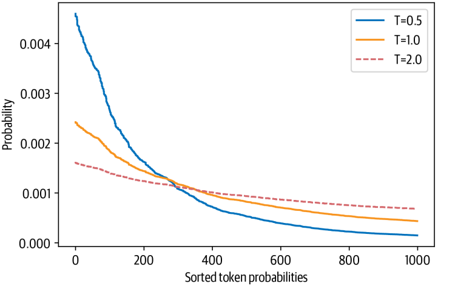
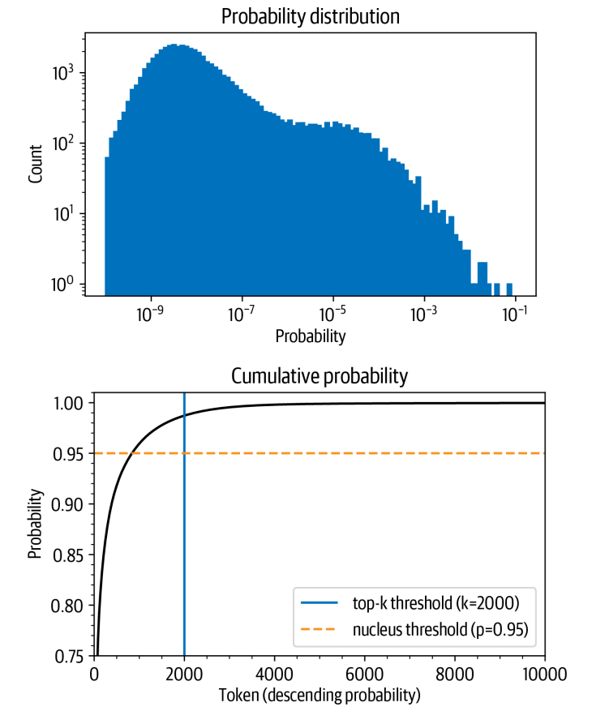
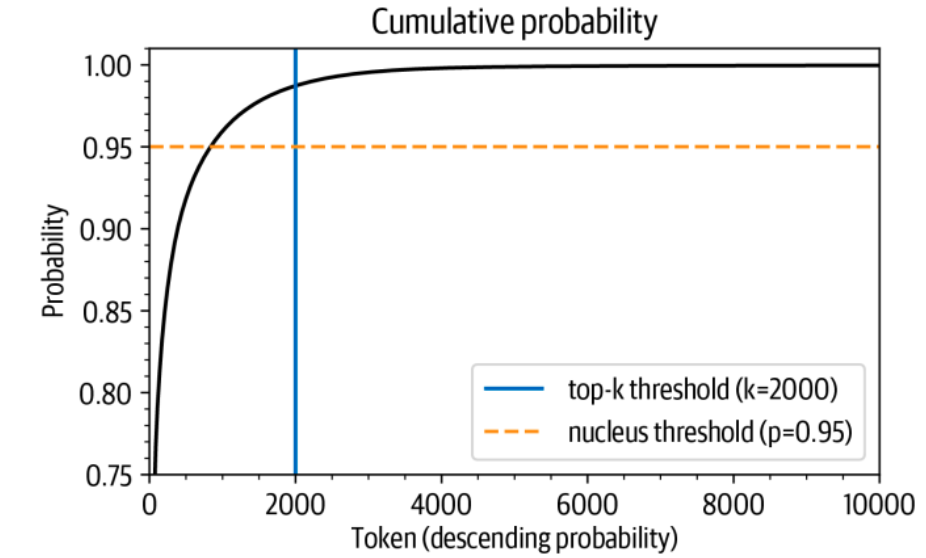

Introduction
Hello fellow adventurers, today we will be talking about text generation using GPT-2 model.
One of the most uncanny features of transformer-based language models is their ability to generate text that is almost indistinguishable from text written by humans. A famous example is OpenAI’s GPT-2, which when given this prompt
" In a shocking finding, scientist discovered a herd of unicorns living in a remote, previously unexplored valley, in the Andes Mountains. Even more surprising to the researchers was the fact that the unicorns spoke perfect English."
was able to generate a compelling news article about talking unicorns:
What makes this example so remarkable?
is that it was generated without any explicit supervision! By simply learning to predict the next word in the text of millions of web pages
Content :
- Seq 2 Seq Overview (you can skip this)
- Challenge with Generating Coherent Text
- Decoding Methods
- Measuring the Quality of Generated Text
Seq 2 Seq Overview
Seq2Seq models are a class of models that are used to convert a sequence of one type into a sequence of another type.
They are used in a variety of tasks such as machine translation, text summarization, question answering, and text generation.
let's say we have a sequence of words in English and we want to translate it to a sequence of words in French. this is a Seq2Seq problem. called Machine Translation which will be the example for this part.
The basic idea behind Seq2Seq models is that we have two recurrent neural networks (RNNs) called the encoder and the decoder that work together to transform one sequence to another.
one model explain the input for the other model to help it generate the output
Encoder
The encoder takes the input sequence and encodes it into a single vector called the context vector.ht=f(xt,ht−1) && c=q(h1,…,hT)
The encoder is a recurrent neural network (RNN), such as a GRU or LSTM. At each time step, the encoder produces a hidden state ht. The context vector c is then generated from the sequence of hidden states ht, using a nonlinear function q. The context vector c summarizes the entire input sequence and is used by the decoder to generate the output sequence.
Decoder
The decoder takes the context vector and generates the output sequence.The decoder is trained to predict the next word yt given the context vector c and all the previously predicted words {y1, ..., yt-1}. It defines a probability over the translation y by decomposing the joint probability: P(y)=∏Tt=1P(yt|y1,…,yt−1,c) this equation means that the probability of the next word yt is dependent on the previous words {y1, ..., yt-1} and the context vector c. In other words, the probability of a translation sequence is calculated by computing the conditional probability of each word given the previous words.
Attention
The attention mechanism is used to overcome the limitation of the encoder-decoder architecture. The encoder-decoder architecture encodes the entire input sequence into a single vector, which is then decoded into the output sequence. This architecture works well for short sequences but is unable to generate good results for long sequences. The attention mechanism overcomes this limitation by allowing the decoder to look at different parts of the input sequence at each step of the output generation. This is done by creating connections between the decoder and the encoder. The attention mechanism is a vector of weights that are multiplied with the encoder hidden states to get the context vector. The context vector is then concatenated with the decoder hidden state and fed into the decoder to generate the output. there is a lot of types of attention mechanism but we will not talk about them here.The Challenge with Generating Coherent Text
For task-specific heads like sequence or token classification, generating predictions is fairly straightforward; the model produces some logits and we either take the maximum value to get the predicted class, or apply a softmax function to obtain the predicted probabilities per class
But converting the model’s probabilistic output to text requires a decoding method, which introduces a few challenges that are unique to text generation
- The decoding is done iteratively and thus involves significantly more compute than simply passing inputs once through the forward pass of a model.
- The quality and diversity of the generated text depend on the choice of decoding method and associated hyper-parameters.
Decoding Methods
intro
we will take GPT-2 as an example how it decode the output.
If you skipped the previous part, please read the decoder section.
more
GPT-2 is a language model that is trained to predict the next word in a sequence. It does this by estimating the probability of each possible next word, given the previous words in the sequence. This probability is called P(y|x), where y is the next word and x is the sequence of previous words.
However, it is impractical to gather enough training data to estimate P(y|x) directly. This is because the number of possible sequences of words is astronomically large. Instead, GPT-2 uses the chain rule of probability to factorize P(y|x) as a product of conditional probabilities.
The chain rule of probability states that the probability of a sequence of events occurring is equal to the product of the probabilities of each event occurring, given that the previous events have already occurred. In the case of GPT-2, the sequence of events is the sequence of words.
P(w1, w2, ..., wn) = P(w1) * P(w2 | w1) * P(w3 | w1, w2) * ... * P(wn | w1, w2, ..., wn-1)
For example, let's say we want to predict the next word in the sequence "I am a". The chain rule of probability tells us that the probability of this sequence occurring is equal to the probability of the word "a" occurring, given that the words "I" and "am" have already occurred, multiplied by the probability of the word "I" occurring, given that no words have previously occurred.
In other words, the probability of the sequence "I am a" occurring is equal to P("a" | "I am") * P("I" | "").
The chain rule of probability is a powerful tool that allows GPT-2 to estimate the probability of a sequence of words even when there is not enough training data to estimate P(y|x) directly.
Here are some examples of how the chain rule of probability can be used to predict the next word in a sequence:
- If the previous words are "I am", the probability of the next word being "a" is high. This is because the word "a" is a common word that often follows the word "I".
- If the previous words are "I am a", the probability of the next word being "dog" is low. This is because the word "dog" is not a common word that follows the phrase "I am a".
At the heart of this process lies a decoding method that determines which token is selected at each timestep. Since the language model head produces a logit zt, i per token in the vocabulary at each step, we can get the probability distribution over the next possible token wi by taking the softmax:
P(yₜ = wᵢ | y₍ₜ₋₁₎, x) = softmax(zₜ)The goal of most decoding methods is to search for the most likely overall sequence by picking a Y such that:Ŷ = argmax₍y₎ P(y|x)
Finding y-hat directly would involve evaluating every possible sequence with the language model. Since there does not exist an algorithm that can do this in a reasonable amount of time
Decoding Methods
1. Greedy Search Decoding
The simplest decoding method to get discrete tokens from a model’s continuous output is to greedily select the token with the highest probability at each timestep:
Ŷ = argmax₍y₎ P(y|x)Greedy search decoding is a simple decoding method that selects the token with the highest probability at each timestep. This method is computationally efficient, but it may not always produce the best results. The main drawback of greedy search decoding is that it tends to produce repetitive and generic text.
let's see an example of greedy search decoding with GPT-2
import torch
from transformers import AutoTokenizer, AutoModelForCausalLM
device = "cuda" if torch.cuda.is_available() else "cpu"
model_name = "gpt2-xl"
tokenizer = AutoTokenizer.from_pretrained(model_name)
model = AutoModelForCausalLM.from_pretrained(model_name).to(device)we get the model now we can use it to generate text
import pandas as pd
input_txt = "Transformers are the"
input_ids = tokenizer(input_txt, return_tensors="pt")["input_ids"].to(device)
iterations = []
n_steps = 8
choices_per_step = 5
with torch.no_grad():
for _ in range(n_steps):
iteration = dict()
iteration["Input"] = tokenizer.decode(input_ids[0])
output = model(input_ids=input_ids)
# Select logits of the first batch and the last token and apply softmax
next_token_logits = output.logits[0, -1, :]
next_token_probs = torch.softmax(next_token_logits, dim=-1)
sorted_ids = torch.argsort(next_token_probs, dim=-1, descending=True)
# Store tokens with highest probabilities
for choice_idx in range(choices_per_step):
token_id = sorted_ids[choice_idx]
token_prob = next_token_probs[token_id].cpu().numpy()
token_choice = (
f"{tokenizer.decode(token_id)} ({100 * token_prob:.2f}%)"
)
iteration[f"Choice {choice_idx+1}"] = token_choice
# Append predicted next token to input
input_ids = torch.cat([input_ids, sorted_ids[None, 0, None]], dim=-1)
iterations.append(iteration)
pd.DataFrame(iterations)Test it in Colab or Kaggle :)
now we will use the built-in function in transformers library to generate text
input_ids = tokenizer(input_txt, return_tensors="pt")["input_ids"].to(device)
output = model.generate(input_ids, max_new_tokens=n_steps, do_sample=False)
print(tokenizer.decode(output[0]))2. Beam Search Decoding
Beam search decoding is a simple modification of greedy search decoding that keeps track of the k most likely sequences at each timestep, where k is a hyperparameter called the beam size. At each timestep, the beam search algorithm expands the k most likely sequences by adding all possible tokens to each sequence and keeping the k sequences with the highest probabilities. The beam search algorithm terminates when all k sequences end with the end-of-sequence token or when a maximum number of steps is reached.
- Imagine you are trying to find the shortest path from one point to another on a map. You could start by following the path with the highest probability of being the shortest. But if you do that, you might miss out on other paths that are just as short or even shorter.
- A better way to find the shortest path is to consider all of the possible paths at each step. You can do this by keeping track of the top-b most probable paths, where b is the number of paths you want to consider.
- At each step, you can then choose the next path to follow by considering all of the possible extensions of the existing paths. You can then select the b most likely extensions.
- This process continues until you reach your destination.
In the context of natural language processing, beam search is a technique used to generate text. It works by keeping track of the top-b most probable sequences of tokens at each step. At each step, the next token is chosen by considering all of the possible extensions of the existing sequences. The b most likely extensions are then selected.
Beam search is a more complex technique than greedy search, but it can often produce better results. This is because beam search considers more possibilities at each step, which can help to prevent the model from getting stuck in local minima.
Here is an example of how beam search works:
- Imagine you want to generate the sentence "The cat sat on the mat." The beam search algorithm would start by considering all of the possible sequences of tokens that start with the word "The." It would then choose the b most probable sequences.
- At the next step, the algorithm would consider all of the possible extensions of the b most probable sequences. It would then choose the b most probable extensions.
- This process would continue until the algorithm had generated the complete sentence "The cat sat on the mat."
let's see an example of beam search decoding with GPT-2
output_beam = model.generate(input_ids, max_length=max_length, num_beams=5, do_sample=False)
logp = sequence_logprob(model, output_beam, input_len=len(input_ids[0]))
print(tokenizer.decode(output_beam[0]))3. Sampling Decoding
Sampling decoding is a technique used to generate text. It works by randomly selecting the next token from the probability distribution over the vocabulary. This technique is often used in conjunction with beam search decoding.
P (yt = wi | y<t, X) = softmax(zt, i) = exp(zti)⁄Σj exp(ztj)
where |V| denotes the cardinality of the vocabulary. We can easily control the diversity of the output by adding a temperature parameter T that rescales the logits before taking the softmax:
P(yt = wi | y<t,x) = exp(zt,i/T)⁄Σj=1 exp(ztj/T)
The formula takes the logits from the language model and scales them by the temperature parameter. The scaled logits are then passed through a softmax function to produce a probability distribution over the tokens.
Temperature sampling addresses this problem by adding a temperature parameter to the output distribution. The temperature parameter controls how "smooth" the distribution is. When the temperature is low, the distribution is peaked around the most likely tokens, which makes the outputs more repetitive. When the temperature is high, the distribution is flatter, which makes the outputs more diverse.
In plain English, the formula says that the probability of a token being chosen is proportional to the exponent of the token's logit, divided by the sum of the exponents of all the tokens. The temperature parameter controls the exponents, so it controls the shape of the probability distribution.
Here is an example of how temperature sampling works. Let's say we have a language model that has been trained on a dataset of news articles. We want to use the language model to generate a new news article.
If we set the temperature parameter to a low value, the language model will be more likely to generate an article that is similar to the articles in the training dataset. This is because the low temperature will cause the probability distribution to be peaked around the most likely tokens, which are the tokens that appear frequently in the training dataset.
If we set the temperature parameter to a high value, the language model will be more likely to generate an article that is different from the articles in the training dataset. This is because the high temperature will cause the probability distribution to be flatter, which means that all the tokens will have a chance of being chosen.
The effect of temperature on token probabilities is shown in the image you sent me. The image shows the probability of a token being chosen as a function of the temperature parameter. As the temperature increases, the probability of all the tokens increases, but the probability of the most likely tokens decreases.
output_temp = model.generate(input_ids, max_length=max_length, do_sample=True,temperature=2.0, top_k=0)
print(tokenizer.decode(output_temp[0]))4. Top-K and Nucleus Sampling
Top-k and nucleus (top-p) sampling are two popular alternatives or extensions tousing temperature.
in both cases, the basic idea is to restrict the number of possible tokens we can sample from at each timestep
To see how this works, let’s first visualize The cumulative probability distribution of the model’s outputs at T = 1 as seen in
Let’s tease apart these plots, since they contain a lot of information.
The upper plot shows a histogram of the token probabilities. A histogram is a graph that shows the distribution of data. In this case, the data is the probabilities of the tokens in the vocabulary.
The histogram has two peaks. The first peak is around 10-8, which means that there are a lot of tokens with a probability of about 1 in 100 million. The second peak is around 10-4, which means that there are a few more tokens with a probability of about 1 in 10,000.
After the second peak, there is a sharp drop. This means that there are only a handful of tokens with a probability between 10-2 and 10-1. The isolated bar at 10-1 represents the token with the highest probability. The probability of picking this token is 1 in 10.
In other words, the most likely token has a probability of 1 in 10. There are a few other tokens that are also relatively likely, but the vast majority of tokens have a very low probability.
The lower plot shows the cumulative probability of picking a token from the vocabulary. The cumulative probability is the probability of picking a token and all the tokens that come before it.
The plot shows that there is a 96% chance of picking any of the 1,000 tokens with the highest probability. This means that if you randomly pick a token, there is a 96% chance that it will be one of the 1,000 most likely tokens.
The probability rises quickly above 90%, but it takes several thousand tokens to reach close to 100%. This means that there is a 1 in 100 chance of not picking any of the tokens that are not even in the top 2,000.
These numbers might seem small at first, but they become important when you consider that we sample once per token when generating text. So even if there is only a 1 in 100 or 1,000 chance of picking an unlikely token, if we sample hundreds of times, there is a significant chance of picking an unlikely token at some point.
This can badly influence the quality of the generated text. For this reason, we generally want to avoid these very unlikely tokens. This is where top-k and top-p sampling come into play.
output_topk = model.generate(input_ids, max_length=max_length, do_sample=True,top_k=50)
print(tokenizer.decode(output_topk[0]))
output_topp = model.generate(input_ids, max_length=max_length, do_sample=True,top_p=0.90)
print(tokenizer.decode(output_topp[0]))Top-p sampling is a similar technique that avoids the low-probability choices by only sampling from the tokens whose cumulative probability is greater than or equal to p. For example, if we set p to 0.95, then we will only sample from the tokens whose cumulative probability is greater than or equal to 95%.
We can also apply beam search when we use sampling. Instead of selecting the next batch of candidate tokens greedily, we can sample them and build up the beams in the same way
Which Decoding Method Is Best?
Unfortunately, There is no universally "best" decoding method for language models. The best approach will depend on the nature of the task you are generating text for.
- If you want your model to perform a precise task, such as arithmetic or providing an answer to a specific question, you should lower the temperature or use deterministic methods like greedy search in combination with beam search. This will guarantee that the model always generates the most likely answer.
- If you want the model to generate longer texts and even be a bit creative, you should switch to sampling methods and increase the temperature. This will allow the model to explore more possibilities and generate more diverse text. You can also use a mix of top-k and nucleus sampling to further control the diversity of the generated text.
Measuring the Quality of Generated Text
this section will be in the next article. as this article is too long.